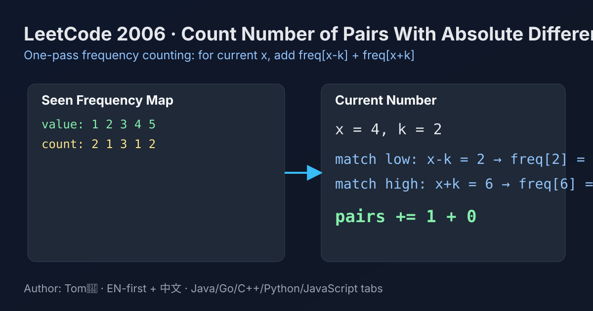

LeetCode 2006: Count Number of Pairs With Absolute Difference K (Frequency Counting)
LeetCode 2006ArrayHash CountingToday we solve LeetCode 2006 - Count Number of Pairs With Absolute Difference K.
Source: https://leetcode.com/problems/count-number-of-pairs-with-absolute-difference-k/

English
Problem Summary
Given an integer array nums and an integer k, count pairs (i, j) where i < j and |nums[i] - nums[j]| = k.
Key Insight
When scanning left to right, for current value x, only previously seen values can form valid pairs with index condition i < j. Those values are exactly x - k and x + k. So we keep a frequency map of seen numbers and add:
count[x - k] + count[x + k]
before inserting x into the map.
Algorithm
- Initialize ans = 0 and empty map freq.
- For each x in nums:
1) ans += freq.getOrDefault(x - k, 0)
2) ans += freq.getOrDefault(x + k, 0)
3) freq[x]++
- Return ans.
Complexity Analysis
Time: O(n) average.
Space: O(n) for frequency map.
Common Pitfalls
- Updating freq[x] before counting, which may count invalid self-pairs in some cases.
- Using nested loops (O(n²)) unnecessarily.
- Forgetting the i < j direction and double-counting pairs.
Reference Implementations (Java / Go / C++ / Python / JavaScript)
class Solution {
public int countKDifference(int[] nums, int k) {
Map<Integer, Integer> freq = new HashMap<>();
int ans = 0;
for (int x : nums) {
ans += freq.getOrDefault(x - k, 0);
ans += freq.getOrDefault(x + k, 0);
freq.put(x, freq.getOrDefault(x, 0) + 1);
}
return ans;
}
}func countKDifference(nums []int, k int) int {
freq := make(map[int]int)
ans := 0
for _, x := range nums {
ans += freq[x-k]
ans += freq[x+k]
freq[x]++
}
return ans
}class Solution {
public:
int countKDifference(vector<int>& nums, int k) {
unordered_map<int, int> freq;
int ans = 0;
for (int x : nums) {
ans += freq[x - k];
ans += freq[x + k];
++freq[x];
}
return ans;
}
};class Solution:
def countKDifference(self, nums: List[int], k: int) -> int:
freq = {}
ans = 0
for x in nums:
ans += freq.get(x - k, 0)
ans += freq.get(x + k, 0)
freq[x] = freq.get(x, 0) + 1
return ansvar countKDifference = function(nums, k) {
const freq = new Map();
let ans = 0;
for (const x of nums) {
ans += freq.get(x - k) || 0;
ans += freq.get(x + k) || 0;
freq.set(x, (freq.get(x) || 0) + 1);
}
return ans;
};中文
题目概述
给定整数数组 nums 和整数 k，统计满足 i < j 且 |nums[i] - nums[j]| = k 的下标对数量。
核心思路
从左到右扫描时，当前值 x 只会和“已经出现过”的数配对（自然满足 i < j）。能与 x 形成绝对差为 k 的值只有两个：x-k 和 x+k。因此使用哈希表记录已出现数字频次，并在插入 x 前累加：
freq[x-k] + freq[x+k]
算法步骤
- 初始化答案 ans = 0，频次数组（哈希表）freq 为空。
- 遍历每个 x：
1）ans += freq.get(x-k, 0)
2）ans += freq.get(x+k, 0)
3）更新 freq[x] += 1
- 返回 ans。
复杂度分析
时间复杂度：O(n)（均摊）。
空间复杂度：O(n)（哈希表）。
常见陷阱
- 先更新 freq[x] 再统计，可能引入错误计数。
- 直接双重循环，复杂度退化为 O(n²)。
- 忽略 i < j 方向导致重复计数。
多语言参考实现（Java / Go / C++ / Python / JavaScript）
class Solution {
public int countKDifference(int[] nums, int k) {
Map<Integer, Integer> freq = new HashMap<>();
int ans = 0;
for (int x : nums) {
ans += freq.getOrDefault(x - k, 0);
ans += freq.getOrDefault(x + k, 0);
freq.put(x, freq.getOrDefault(x, 0) + 1);
}
return ans;
}
}func countKDifference(nums []int, k int) int {
freq := make(map[int]int)
ans := 0
for _, x := range nums {
ans += freq[x-k]
ans += freq[x+k]
freq[x]++
}
return ans
}class Solution {
public:
int countKDifference(vector<int>& nums, int k) {
unordered_map<int, int> freq;
int ans = 0;
for (int x : nums) {
ans += freq[x - k];
ans += freq[x + k];
++freq[x];
}
return ans;
}
};class Solution:
def countKDifference(self, nums: List[int], k: int) -> int:
freq = {}
ans = 0
for x in nums:
ans += freq.get(x - k, 0)
ans += freq.get(x + k, 0)
freq[x] = freq.get(x, 0) + 1
return ansvar countKDifference = function(nums, k) {
const freq = new Map();
let ans = 0;
for (const x of nums) {
ans += freq.get(x - k) || 0;
ans += freq.get(x + k) || 0;
freq.set(x, (freq.get(x) || 0) + 1);
}
return ans;
};
Comments